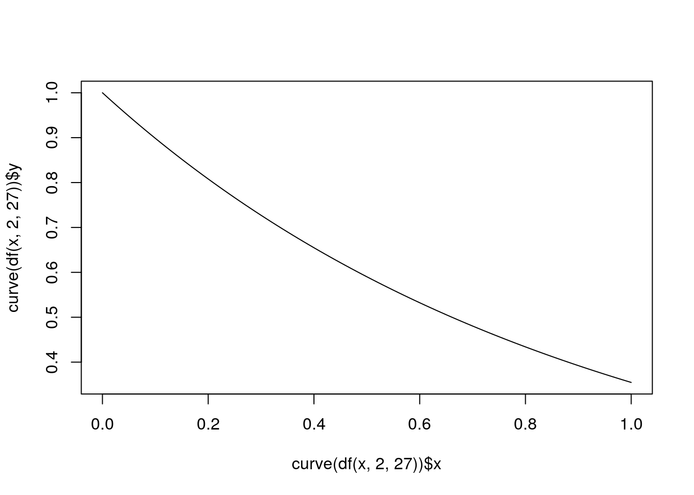

The two data sets I used are “murder_2015_final” and “police_locals”.The “murder_2015_final” data set (m15f) contained five variables (two character and three numeric), and it had eighty-three observations. After tidying, the number of variables remained five (three character and two numerical), and it had a hundred and sixty-six observations. The “police_locals” data set (pl) contained eight variables (one character and seven numeric), and it had seventy-five observations. After tidying, it had four variables (two character and two numerical), and it had four hundred and fifty observations. The “police_local” data set was acquired using calculations based on the U.S. Census, and this data set was interesting to me because it was compiled in response to the racially driven Ferguson protests that occurred in Missouri; the creators of the data set reasoned that if Ferguson had a huge racial gap in its population it should also be reflected in the police force assuming that they were locals. This reasoning caused the creators to compile a data set questioning the living situations of police in major cities. The “murder_2015_final” data set was acquired from the FBI crime data, this data was interesting to me because I was curious to see if total murders (from murder_2015_final data) would have an effect on force size (from police_locals data). For both data sets, I noticed that there were several variables that could be grouped together under a column. So for the “pl” data set, I used “pivot_longer” to group the variables: all, white, non_white, black, hispanic and asian, under a new variable that I called “race” and I put their values in a new variable called “perc_in” which means the percentages of the police depending on race that are locals in their city; this new tidy data set was termed “pl_tidy”. Then for the “m15f” data set, I used “pivot_longer” to group the variables: murders_2014, murders_2015, under a new variable that I called “year” and I used the “separate function” to rename the observations in the column into “2014” and “2015”; this new tidy data set was termed “m15f_tidy”. I noticed after tidying this data set that the variable “year” was numeric, but I wanted it to be a character variable so I used ‘as.character’ to make it one. I performed an inner join on the tidy versions of the two data sets; I joined these data set by “city”. This resulted in eight variables and three hundred and twenty-four observations; the joined data set was termed “m_pl”.
library(fivethirtyeight)## Some larger datasets need to be installed separately, like senators and
## house_district_forecast. To install these, we recommend you install the
## fivethirtyeightdata package by running:
## install.packages('fivethirtyeightdata', repos =
## 'https://fivethirtyeightdata.github.io/drat/', type = 'source')library(tidyverse)## ── Attaching packages ─────────────────────────────────────── tidyverse 1.3.0 ──## ✓ ggplot2 3.3.3 ✓ purrr 0.3.4
## ✓ tibble 3.0.4 ✓ dplyr 1.0.2
## ✓ tidyr 1.1.2 ✓ stringr 1.4.0
## ✓ readr 1.4.0 ✓ forcats 0.5.0## ── Conflicts ────────────────────────────────────────── tidyverse_conflicts() ──
## x dplyr::filter() masks stats::filter()
## x dplyr::lag() masks stats::lag()write_csv(murder_2015_final, "m15f.csv")
getwd()## [1] "/stor/home/oaa847/website/content/project"m15f <- read_csv("m15f.csv")##
## ── Column specification ────────────────────────────────────────────────────────
## cols(
## city = col_character(),
## state = col_character(),
## murders_2014 = col_double(),
## murders_2015 = col_double(),
## change = col_double()
## )str(m15f)## tibble [83 × 5] (S3: spec_tbl_df/tbl_df/tbl/data.frame)
## $ city : chr [1:83] "Baltimore" "Chicago" "Houston" "Cleveland" ...
## $ state : chr [1:83] "Maryland" "Illinois" "Texas" "Ohio" ...
## $ murders_2014: num [1:83] 211 411 242 63 105 90 248 78 41 159 ...
## $ murders_2015: num [1:83] 344 478 303 120 162 145 280 109 72 188 ...
## $ change : num [1:83] 133 67 61 57 57 55 32 31 31 29 ...
## - attr(*, "spec")=
## .. cols(
## .. city = col_character(),
## .. state = col_character(),
## .. murders_2014 = col_double(),
## .. murders_2015 = col_double(),
## .. change = col_double()
## .. )write_csv(police_locals, "pl.csv")
getwd()## [1] "/stor/home/oaa847/website/content/project"pl <- read_csv("pl.csv")##
## ── Column specification ────────────────────────────────────────────────────────
## cols(
## city = col_character(),
## force_size = col_double(),
## all = col_double(),
## white = col_double(),
## non_white = col_double(),
## black = col_double(),
## hispanic = col_double(),
## asian = col_double()
## )str(pl)## tibble [75 × 8] (S3: spec_tbl_df/tbl_df/tbl/data.frame)
## $ city : chr [1:75] "New York" "Chicago" "Los Angeles" "Washington" ...
## $ force_size: num [1:75] 32300 12120 10100 9340 7700 ...
## $ all : num [1:75] 0.618 0.875 0.228 0.116 0.292 ...
## $ white : num [1:75] 0.4464 0.872 0.1528 0.0568 0.1737 ...
## $ non_white : num [1:75] 0.764 0.877 0.264 0.157 0.399 ...
## $ black : num [1:75] 0.771 0.897 0.387 0.17 0.366 ...
## $ hispanic : num [1:75] 0.7629 0.8398 0.2177 0.0899 0.4571 ...
## $ asian : num [1:75] 0.749 0.967 0.305 0.231 0.408 ...
## - attr(*, "spec")=
## .. cols(
## .. city = col_character(),
## .. force_size = col_double(),
## .. all = col_double(),
## .. white = col_double(),
## .. non_white = col_double(),
## .. black = col_double(),
## .. hispanic = col_double(),
## .. asian = col_double()
## .. )pl_tidy <- pl %>% pivot_longer(all:asian, names_to = "race", values_to = "perc_in")
str(pl_tidy)## tibble [450 × 4] (S3: tbl_df/tbl/data.frame)
## $ city : chr [1:450] "New York" "New York" "New York" "New York" ...
## $ force_size: num [1:450] 32300 32300 32300 32300 32300 ...
## $ race : chr [1:450] "all" "white" "non_white" "black" ...
## $ perc_in : num [1:450] 0.618 0.446 0.764 0.771 0.763 ...m15f_tidy <- m15f %>% pivot_longer(3:4, names_to = "years", values_to = "total_murders") %>% separate(years,into = c(NA,"year"), sep=8, convert=T)
m15f_tidy$year <- as.character(m15f_tidy$year)
str(m15f_tidy)## tibble [166 × 5] (S3: tbl_df/tbl/data.frame)
## $ city : chr [1:166] "Baltimore" "Baltimore" "Chicago" "Chicago" ...
## $ state : chr [1:166] "Maryland" "Maryland" "Illinois" "Illinois" ...
## $ change : num [1:166] 133 133 67 67 61 61 57 57 57 57 ...
## $ year : chr [1:166] "2014" "2015" "2014" "2015" ...
## $ total_murders: num [1:166] 211 344 411 478 242 303 63 120 105 162 ...m15f_tidy %>% inner_join(pl_tidy, by = "city")->m_pl
str(m_pl)## tibble [324 × 8] (S3: tbl_df/tbl/data.frame)
## $ city : chr [1:324] "Baltimore" "Baltimore" "Baltimore" "Baltimore" ...
## $ state : chr [1:324] "Maryland" "Maryland" "Maryland" "Maryland" ...
## $ change : num [1:324] 133 133 133 133 133 133 133 133 133 133 ...
## $ year : chr [1:324] "2014" "2014" "2014" "2014" ...
## $ total_murders: num [1:324] 211 211 211 211 211 211 344 344 344 344 ...
## $ force_size : num [1:324] 2800 2800 2800 2800 2800 2800 2800 2800 2800 2800 ...
## $ race : chr [1:324] "all" "white" "non_white" "black" ...
## $ perc_in : num [1:324] 0.257 0.133 0.362 0.391 NA ...sapply(m_pl, mode)## city state change year total_murders
## "character" "character" "numeric" "character" "numeric"
## force_size race perc_in
## "numeric" "character" "numeric"m_pl %>% distinct(state)## # A tibble: 21 x 1
## state
## <chr>
## 1 Maryland
## 2 Illinois
## 3 Texas
## 4 Ohio
## 5 D.C.
## 6 Wisconsin
## 7 Pennsylvania
## 8 Missouri
## 9 Colorado
## 10 California
## # … with 11 more rowsUsing the dataset, I computed a MANOVA testing whether at least one of the four response variables (change, total_murders, force_size, perc_in) differs by race. I checked some assumptions, the multivariate normality and homogeneity, and found that normality and homogeneity were likely not met, as all the races had significant p-values and the correlation values were strange. However, the MANOVA test revealed that there was no significant mean difference across the different races (p=0.09003). Despite that, I still ran an ANOVA and found that force_size (p=0.01894) and perc_in (p=0.01215) were the significant response variables. So I ran a post-hoc test for both of these variables, it was a pairwise t-test. In all I ran 1 MANOVA, 4 ANOVAs, and 10 pairwise t-tests, so alpha = 0.003333333, which was still significant.Across this whole set of tests, the probability that I made at least one type I error is 0.5367088.The significance level needed to keep the overall type I error rate at .05 is 0.003333333.*
library(dplyr)
library(rstatix)##
## Attaching package: 'rstatix'## The following object is masked from 'package:stats':
##
## filtergroup <- m_pl$race
DVs <- m_pl %>% select(change, total_murders, force_size, perc_in)
sapply(split(DVs,group), mshapiro_test)## all asian black hispanic non_white
## statistic 0.5616121 0.7561 0.5634962 0.5123676 0.5553382
## p.value 1.881222e-11 0.001502922 3.389959e-11 4.542103e-10 1.530722e-11
## white
## statistic 0.5641287
## p.value 2.044592e-11lapply(split(DVs,group), cov) ## $all
## change total_murders force_size perc_in
## change 1.031497e+03 1778.54507 3.042159e+04 0.84813665
## total_murders 1.778545e+03 12165.88015 4.124840e+05 10.48327276
## force_size 3.042159e+04 412483.97624 3.829295e+07 308.35059257
## perc_in 8.481366e-01 10.48327 3.083506e+02 0.05340024
##
## $asian
## change total_murders force_size perc_in
## change 1031.497 1778.545 30421.59 NA
## total_murders 1778.545 12165.880 412483.98 NA
## force_size 30421.593 412483.976 38292952.90 NA
## perc_in NA NA NA NA
##
## $black
## change total_murders force_size perc_in
## change 1031.497 1778.545 30421.59 NA
## total_murders 1778.545 12165.880 412483.98 NA
## force_size 30421.593 412483.976 38292952.90 NA
## perc_in NA NA NA NA
##
## $hispanic
## change total_murders force_size perc_in
## change 1031.497 1778.545 30421.59 NA
## total_murders 1778.545 12165.880 412483.98 NA
## force_size 30421.593 412483.976 38292952.90 NA
## perc_in NA NA NA NA
##
## $non_white
## change total_murders force_size perc_in
## change 1031.496855 1778.54507 3.042159e+04 1.25995105
## total_murders 1778.545073 12165.88015 4.124840e+05 10.58501240
## force_size 30421.593291 412483.97624 3.829295e+07 364.95875279
## perc_in 1.259951 10.58501 3.649588e+02 0.05269563
##
## $white
## change total_murders force_size perc_in
## change 1.031497e+03 1.778545e+03 3.042159e+04 0.57947462
## total_murders 1.778545e+03 1.216588e+04 4.124840e+05 7.45203862
## force_size 3.042159e+04 4.124840e+05 3.829295e+07 190.26665639
## perc_in 5.794746e-01 7.452039e+00 1.902667e+02 0.05926163man1<-manova(cbind(change, total_murders, force_size, perc_in)~race, data=m_pl)
summary(man1)## Df Pillai approx F num Df den Df Pr(>F)
## race 5 0.10865 1.4519 20 1040 0.09003 .
## Residuals 260
## ---
## Signif. codes: 0 '***' 0.001 '**' 0.01 '*' 0.05 '.' 0.1 ' ' 1summary(aov(man1))## Response change :
## Df Sum Sq Mean Sq F value Pr(>F)
## race 5 2096 419.18 0.4311 0.8268
## Residuals 260 252824 972.40
##
## Response total_murders :
## Df Sum Sq Mean Sq F value Pr(>F)
## race 5 70610 14122 1.0852 0.3689
## Residuals 260 3383538 13014
##
## Response force_size :
## Df Sum Sq Mean Sq F value Pr(>F)
## race 5 5.8652e+08 117303880 2.76 0.01894 *
## Residuals 260 1.1051e+10 42501994
## ---
## Signif. codes: 0 '***' 0.001 '**' 0.01 '*' 0.05 '.' 0.1 ' ' 1
##
## Response perc_in :
## Df Sum Sq Mean Sq F value Pr(>F)
## race 5 0.9079 0.181575 2.9888 0.01215 *
## Residuals 260 15.7956 0.060752
## ---
## Signif. codes: 0 '***' 0.001 '**' 0.01 '*' 0.05 '.' 0.1 ' ' 1
##
## 58 observations deleted due to missingnesspairwise.t.test(m_pl$force_size,m_pl$race,p.adj="none")##
## Pairwise comparisons using t tests with pooled SD
##
## data: m_pl$force_size and m_pl$race
##
## all asian black hispanic non_white
## asian 1 - - - -
## black 1 1 - - -
## hispanic 1 1 1 - -
## non_white 1 1 1 1 -
## white 1 1 1 1 1
##
## P value adjustment method: nonepairwise.t.test(m_pl$perc_in,m_pl$race,p.adj="none")##
## Pairwise comparisons using t tests with pooled SD
##
## data: m_pl$perc_in and m_pl$race
##
## all asian black hispanic non_white
## asian 0.1035 - - - -
## black 0.0556 0.6992 - - -
## hispanic 0.2908 0.3958 0.4843 - -
## non_white 0.1825 0.4383 0.5498 0.8758 -
## white 0.1898 0.0139 0.0014 0.0251 0.0085
##
## P value adjustment method: none0.05/15## [1] 0.003333333#prob. of getting at least one type 1 error
##prob of not getting a type 1 error = .95
##prob of not getting a type 1 error 15 times
.95^15## [1] 0.4632912##prob of getting at least one type 1 error:
1- (0.4632912)## [1] 0.5367088I performed a randomization test on my data that calculates the F-statistic 5000 times and finds the sampling distribution of F. The null hypothesis is that all the states have the same mean in force size, while the alternative hypothesis that the mean of force size is different among the states. The p-value from the randomization test is 0, meaning than none of the 5000 F-statistics generated under the null hypothesis were higher than the actual F-statistic. Therefore, I rejected the null hypothesis and concluded that the groups differ.
library(dplyr)
summary(aov(force_size~state,data=m_pl))## Df Sum Sq Mean Sq F value Pr(>F)
## state 20 1.155e+10 577258814 276.8 <2e-16 ***
## Residuals 303 6.320e+08 2085752
## ---
## Signif. codes: 0 '***' 0.001 '**' 0.01 '*' 0.05 '.' 0.1 ' ' 1obs_F <- 276.8#this is our observed F-statistic
SSW<- m_pl%>%group_by(state)%>%summarize(SSW=sum((force_size-mean(force_size))^2))%>%summarize(sum(SSW))%>%pull## `summarise()` ungrouping output (override with `.groups` argument)SSB<- m_pl%>%mutate(mean=mean(force_size))%>%group_by(state)%>%mutate(groupmean=mean(force_size))%>% summarize(SSB=sum((mean-groupmean)^2))%>%summarize(sum(SSB))%>%pull## `summarise()` ungrouping output (override with `.groups` argument)SSB## [1] 11545176272SSW## [1] 631982750Fs<-(SSB/20)/(SSW/303)
Fs## [1] 276.763pf(Fs,df1=2, df2=27, lower.tail=F )## [1] 1.027588e-18plot(curve(df(x, 2,27)), type="line")## Warning in plot.xy(xy, type, ...): plot type 'line' will be truncated to first
## character
mean(Fs>obs_F)## [1] 0I built a linear regression model predicting force size from total murders and year with their interaction. Since total_murders was my only numeric variable, I mean-centered it. 5088.90 is the mean/predicted force size for 2014 with average total murders. For forces with average total murders, 2015 had average/predicted force size that is 749.66 lower than 2014, the difference is not significant. Total murders was significantly associated with force size for 2014: for every 1-unit increase in total murder, predicted force size goes up by 34.25. I made a plot to test homoskedasticity, and found that the points fan out slightly, so my null hypothesis might have been met; but the assumptions of normality and linearity are not met. To test it more, I ran a Breuch-Pagan Test and found that it was significant (p=5.941e-13), therefore I rejected the null hypothesis of homoskedasticity and redid the regression using heteroskedasticity robust standard errors and found that t-statistic for total murders is now 8.302684, compared to the previous value of 13.7, while that of 2015 is now -1.35832 compared to -1.371999, and the p-values are now larger. 36.9% of the variation in the outcome is explained by this model.
library(lmtest)## Loading required package: zoo##
## Attaching package: 'zoo'## The following objects are masked from 'package:base':
##
## as.Date, as.Date.numericlibrary(sandwich)
library(tidyverse)
library(ggplot2)
m_pl$total_murders_c <- m_pl$total_murders - mean( m_pl$total_murders, na.rm = T)
fit<-lm(force_size ~ year + total_murders_c, data=m_pl)
summary(fit)##
## Call:
## lm(formula = force_size ~ year + total_murders_c, data = m_pl)
##
## Residuals:
## Min 1Q Median 3Q Max
## -8275.4 -2300.0 -378.0 714.7 20950.6
##
## Coefficients:
## Estimate Std. Error t value Pr(>|t|)
## (Intercept) 5088.90 385.39 13.204 <2e-16 ***
## year2015 -749.66 546.40 -1.372 0.171
## total_murders_c 34.25 2.50 13.699 <2e-16 ***
## ---
## Signif. codes: 0 '***' 0.001 '**' 0.01 '*' 0.05 '.' 0.1 ' ' 1
##
## Residual standard error: 4893 on 321 degrees of freedom
## Multiple R-squared: 0.3689, Adjusted R-squared: 0.365
## F-statistic: 93.83 on 2 and 321 DF, p-value: < 2.2e-16ggplot(m_pl, aes(x=total_murders_c, y=force_size,group=year))+geom_point(aes(color=year))+ geom_smooth(method="lm",formula=y~1,se=F,fullrange=T,aes(color=year))+theme(legend.position=c(.9,.19))plot(m_pl$total_murders_c,m_pl$force_size)bptest(fit)##
## studentized Breusch-Pagan test
##
## data: fit
## BP = 56.303, df = 2, p-value = 5.941e-13coeftest(fit, vcov = vcovHC(fit))[,1:2]## Estimate Std. Error
## (Intercept) 5088.90538 408.532537
## year2015 -749.66261 551.904255
## total_murders_c 34.24855 4.124997#new t-statistic (Estimate/Standard error)
34.24855/ 4.1249974## [1] 8.302684-749.66261/551.904255## [1] -1.35832#old t-stat
34.25/2.50## [1] 13.7-749.66/546.40## [1] -1.371999summary(fit)$r.sq## [1] 0.3689184I built a linear regression model predicting force size from total murders and year with their interaction. Since total_murders was my only numeric variable, I mean-centered it.5137.631 is the mean/predicted force size for 2014 with average total murders. For forces with average total murders, 2015 had average/predicted force size that is 762.202 lower than 2014, the difference is not significant. Total murders was significantly associated with force size for 2014: for every 1-unit increase in total murder, predicted force size goes up by 38.701. Slope of total murders on force size for 2015 is 7.758 lower than for 2014 (not significant). After bootstrapping, the SEs for total murders (SE=3.756809) was in between the original SEs and the robust SEs from the previous section and the SEs for 2015 (SE=542.3384 ) was lower than the original and robust SEs.Their t-statistics are probably larger and their p-values are probably smaller, making the slope likely significant.
library(lmtest)
library(sandwich)
fit1<-lm(force_size ~ total_murders_c * year, data=m_pl)
summary(fit1)##
## Call:
## lm(formula = force_size ~ total_murders_c * year, data = m_pl)
##
## Residuals:
## Min 1Q Median 3Q Max
## -7704.2 -2436.0 -370.5 1002.3 21591.2
##
## Coefficients:
## Estimate Std. Error t value Pr(>|t|)
## (Intercept) 5137.631 385.879 13.314 <2e-16 ***
## total_murders_c 38.701 3.822 10.127 <2e-16 ***
## year2015 -762.202 545.302 -1.398 0.163
## total_murders_c:year2015 -7.758 5.045 -1.538 0.125
## ---
## Signif. codes: 0 '***' 0.001 '**' 0.01 '*' 0.05 '.' 0.1 ' ' 1
##
## Residual standard error: 4882 on 320 degrees of freedom
## Multiple R-squared: 0.3735, Adjusted R-squared: 0.3677
## F-statistic: 63.6 on 3 and 320 DF, p-value: < 2.2e-16resids<-fit1$residuals #using model fit from 1.2
fitted<-fit1$fitted.values
resid_resamp<-replicate(5000,{ new_resids<-sample(resids,replace=TRUE)
m_pl$new_force_size<-fitted+new_resids
fit3<-lm(new_force_size~total_murders_c * year,data=m_pl)
coef(fit3) })
resid_resamp%>%t%>%as.data.frame%>%summarize_all(sd)## (Intercept) total_murders_c year2015 total_murders_c:year2015
## 1 386.1523 3.837022 550.68 5.034221###Logistic Regression Model I fitted a logistic regression model predicting a whiteness as a race from force size and total murders. I wanted to use perc_in as a variable but the observations were not equal in number across the variables in the classification diagnostics so I stuck with total_murders. Controlling for total murders, there is no significant effect of force size on whether a cop is white. Also, controlling for force size, there is no significant effect of total murders on whether a cop is white. The odds ratio for force size on whiteness is 1.0000. The odds ratio for total murders on whiteness is 1.0000. This means that there is no association between whiteness and force size or total murders in a city.The accuracy is 0.8333333. The sensitivity is 0. The specificity is 0.8333333. The AUC is 0.5, which is bad; this also means that the True Positive Rate is equal to the False Positive Rate.
library(tidyverse)
library(lmtest)
library(plotROC)
data<-m_pl%>%mutate(y=ifelse(race=="white",1,0))
head(data)## # A tibble: 6 x 10
## city state change year total_murders force_size race perc_in
## <chr> <chr> <dbl> <chr> <dbl> <dbl> <chr> <dbl>
## 1 Balt… Mary… 133 2014 211 2800 all 0.257
## 2 Balt… Mary… 133 2014 211 2800 white 0.133
## 3 Balt… Mary… 133 2014 211 2800 non_… 0.362
## 4 Balt… Mary… 133 2014 211 2800 black 0.391
## 5 Balt… Mary… 133 2014 211 2800 hisp… NA
## 6 Balt… Mary… 133 2014 211 2800 asian NA
## # … with 2 more variables: total_murders_c <dbl>, y <dbl>fit4<-glm(y~force_size+total_murders_c,data=data, family="binomial")
coeftest(fit4)##
## z test of coefficients:
##
## Estimate Std. Error z value Pr(>|z|)
## (Intercept) -1.6094e+00 2.0717e-01 -7.7686 7.935e-15 ***
## force_size -2.2044e-20 3.0519e-05 0.0000 1
## total_murders_c 1.2071e-17 1.7122e-03 0.0000 1
## ---
## Signif. codes: 0 '***' 0.001 '**' 0.01 '*' 0.05 '.' 0.1 ' ' 1exp(coeftest(fit4))##
## z test of coefficients:
##
## Estimate Std. Error z value Pr(>|z|)
## (Intercept) 0.2000 1.2302 4e-04 1.000
## force_size 1.0000 1.0000 1e+00 2.718
## total_murders_c 1.0000 1.0017 1e+00 2.718probs <- predict(fit4, type="response")
table(predict=as.numeric(probs>.5), truth=data$y) %>% addmargins## truth
## predict 0 1 Sum
## 0 270 54 324
## Sum 270 54 324#accuracy
270/324## [1] 0.8333333#sensitivity
0/54## [1] 0#specificity
270/324## [1] 0.8333333ROCplot1<-ggplot(data)+geom_roc(aes(d=y,m=probs), n.cuts=0)
ROCplot1calc_auc(ROCplot1)## PANEL group AUC
## 1 1 -1 0.5data -> data1
data1$logit<-predict(fit4,type="link")
data1$y<-as.factor(data$y)
data1%>%ggplot()+geom_density(aes(logit,color=y,fill=y), alpha=.4)+
theme(legend.position=c(.85,.85))+geom_vline(xintercept=-1.6)+xlab("predictor (logit)")###Logistic Regression Model with All Variables
I performed a logistic regression predicting whiteness from all of the rest of my variables. The in-sample classification diagnostics are: The model had an accuracy of 0.8796992, a sensitivity of 0.4814815, a specificity of 0.9811321, a precision of 0.8666667, and an AUC of 0.8238994. It has a relatively high accuracy which means it is good at selecting race, however its sensitivity is low which means it’s not so good in picking the correct race (white), on the other hand its specificity is really high which means it is good at picking the wrong race (all other race but white), and its AUC is relatively good but this is probably due to the high specificity.
class_diag<-function(probs,truth){
if(is.numeric(truth)==FALSE & is.logical(truth)==FALSE) truth<-as.numeric(truth)-1
tab<-table(factor(probs>.5,levels=c("FALSE","TRUE")),truth)
prediction<-ifelse(probs>.5,1,0)
acc=mean(truth==prediction)
sens=mean(prediction[truth==1]==1)
spec=mean(prediction[truth==0]==0)
ppv=mean(truth[prediction==1]==1)
f1=2*(sens*ppv)/(sens+ppv)
#CALCULATE EXACT AUC
ord<-order(probs, decreasing=TRUE)
probs <- probs[ord]; truth <- truth[ord]
TPR=cumsum(truth)/max(1,sum(truth))
FPR=cumsum(!truth)/max(1,sum(!truth))
dup<-c(probs[-1]>=probs[-length(probs)], FALSE)
TPR<-c(0,TPR[!dup],1); FPR<-c(0,FPR[!dup],1)
n <- length(TPR)
auc<- sum( ((TPR[-1]+TPR[-n])/2) * (FPR[-1]-FPR[-n]) )
data.frame(acc,sens,spec,ppv,auc)
}
data %>% select( -total_murders_c, -race)-> data
data %>% na.omit() -> data
fit5<-glm(y~., data=data, family="binomial")
probs1<-predict(fit5, type = "response")
class_diag(probs1, data$y)## acc sens spec ppv auc
## 1 0.8796992 0.4814815 0.9811321 0.8666667 0.8238994This 10-fold CV model had an accuracy of 0.7866097, and compared to the previous model that had 0.8796992 it is less accurate. It had a sensitivity of 0.2740079, and compared to the previous model that had 0.4814815 it is less sensitive. It had a specificity of 0.9203602, and compared to the previous model that had 0.9811321 it is slightly less specific. It had a precision of 0.4366667, and compared to the previous model that has 0.8666667 it is less precise. It had an AUC of 0.6681949, and compared to the previous model that had 0.8238994, this AUC is poor.
#10-fold CV
library(tidyverse)
k=10
data1 <- data%>% sample_frac #put rows of dataset in random order
folds <- ntile(1:nrow(data),n=10) #create fold labels
diags<-NULL
for(i in 1:k){
train <- data1[folds!=i,] #create training set (all but fold i)
test <- data1[folds==i,] #create test set (just fold i)
truth <- test$y #save truth labels from fold i
fit6 <- glm(y~., data=train, family="binomial")
probs2 <- predict(fit6, newdata=test, type="response")
diags<-rbind(diags,class_diag(probs2,truth))
}## Warning in predict.lm(object, newdata, se.fit, scale = 1, type = if (type == :
## prediction from a rank-deficient fit may be misleading
## Warning in predict.lm(object, newdata, se.fit, scale = 1, type = if (type == :
## prediction from a rank-deficient fit may be misleading
## Warning in predict.lm(object, newdata, se.fit, scale = 1, type = if (type == :
## prediction from a rank-deficient fit may be misleading
## Warning in predict.lm(object, newdata, se.fit, scale = 1, type = if (type == :
## prediction from a rank-deficient fit may be misleading
## Warning in predict.lm(object, newdata, se.fit, scale = 1, type = if (type == :
## prediction from a rank-deficient fit may be misleading
## Warning in predict.lm(object, newdata, se.fit, scale = 1, type = if (type == :
## prediction from a rank-deficient fit may be misleading
## Warning in predict.lm(object, newdata, se.fit, scale = 1, type = if (type == :
## prediction from a rank-deficient fit may be misleading
## Warning in predict.lm(object, newdata, se.fit, scale = 1, type = if (type == :
## prediction from a rank-deficient fit may be misleading
## Warning in predict.lm(object, newdata, se.fit, scale = 1, type = if (type == :
## prediction from a rank-deficient fit may be misleading
## Warning in predict.lm(object, newdata, se.fit, scale = 1, type = if (type == :
## prediction from a rank-deficient fit may be misleadingsummarize_all(diags,mean)## acc sens spec ppv auc
## 1 0.7742165 0.2883333 0.915425 NaN 0.5798501The only variable retained after performing a LASSO on the model is Baltimore city. Then I ran a classification diagnostic on this new model and found: It had an accuracy of 0.7969925, and compared to the in-sample model that had 0.8796992 it is less accurate. It had a sensitivity of 0, and compared to the in-sample model that had 0.4814815 it is not sensitive at all. It had a specificity of 1, and compared to the in-sample model that had 0.9811321 it is more specific. It had no precision, and compared to the in-sample model that has 0.8666667. It had an AUC of 0.5043676, and compared to the in-sample model that had 0.8238994, this AUC is bad. Compared to the logistic regression from the 10-fold CV, it is also lacking in sensitivity, precision and AUC, but it was better in accuracy and specificity.
#Lasso
library(glmnet)## Loading required package: Matrix##
## Attaching package: 'Matrix'## The following objects are masked from 'package:tidyr':
##
## expand, pack, unpack## Loaded glmnet 4.0-2y<-as.matrix(data$y)
x<-model.matrix(fit5)[,-1] #grab predictors
cv<-cv.glmnet(x,y,family="binomial")
lasso<-glmnet(x,y,family="binomial",lambda=cv$lambda.1se)
coef(lasso)## 52 x 1 sparse Matrix of class "dgCMatrix"
## s0
## (Intercept) -1.367602
## cityBaltimore 0.000000
## cityBoston .
## cityChicago .
## cityCincinnati .
## cityCleveland .
## cityDallas .
## cityDenver .
## cityDetroit .
## cityHouston .
## cityIndianapolis .
## cityLas Vegas .
## cityLos Angeles .
## cityMiami .
## cityMilwaukee .
## cityMinneapolis .
## cityNew Orleans .
## cityNew York .
## cityPhiladelphia .
## cityPhoenix .
## cityPittsburgh .
## citySan Antonio .
## citySan Diego .
## citySan Francisco .
## citySeattle .
## citySt. Louis .
## cityWashington .
## stateCalifornia .
## stateColorado .
## stateD.C. .
## stateFlorida .
## stateGeorgia .
## stateIllinois .
## stateIndiana .
## stateLouisiana .
## stateMaryland .
## stateMassachusetts .
## stateMichigan .
## stateMinnesota .
## stateMissouri .
## stateNevada .
## stateNew York .
## stateOhio .
## statePennsylvania .
## stateTexas .
## stateWashington .
## stateWisconsin .
## change .
## year2015 .
## total_murders .
## force_size .
## perc_in .lasso_dat <- data %>% mutate( Baltimore= ifelse(city=="Baltimore", 1, 0)) %>% select(Baltimore, y )
fit7<-glm(y~.,data=lasso_dat, family="binomial")
probs3<-predict(fit7, type = "response")
class_diag(probs3, lasso_dat$y)## acc sens spec ppv auc
## 1 0.7969925 0 1 NaN 0.5043676table(predict=as.numeric(probs3>.5),truth=lasso_dat$y)%>%addmargins## truth
## predict 0 1 Sum
## 0 212 54 266
## Sum 212 54 266library(tidyverse)
k=10
data1 <- lasso_dat %>% sample_frac
folds <- ntile(1:nrow(data),n=10)
diags<-NULL
for(i in 1:k){
train <- data1[folds!=i,]
test <- data1[folds==i,]
truth <- test$y
fit8 <- glm(y~.,
data=train, family="binomial")
probs4 <- predict(fit8, newdata=test, type="response")
diags<-rbind(diags,class_diag(probs4,truth))
}
summarize_all(diags,mean)## acc sens spec ppv auc
## 1 0.797151 0 1 NaN 0.4739618